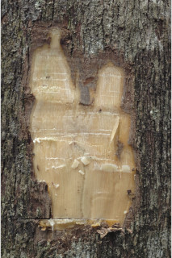
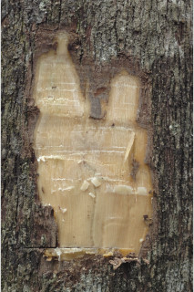
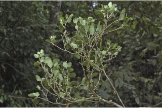
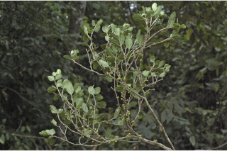

Small trees ca. 7 m tall.
ಅಂದಾಜು 7 ಮೀ. ಎತ್ತರದವರೆಗೆ ಬೆಳೆಯುವ ಸಣ್ಣ ಮರಗಳು.
ഏതാണ്ട് 7 മീറ്റര് വരെ ഉയരമുളള ചെറുമരങ്ങള്.
மிகச்சிறிய மரங்களாக 7 மீ. உயரம் வரை வளரக்கூடியது
Branchlets slender, subterete, glabrous.
ಕಿರುಕೊಂಬೆಗಳು ತೆಳುವಾಗಿದ್ದು ಉಪದುಂಡಾಕಾರದಲ್ಲಿರುತ್ತವೆ ಮತ್ತು ರೋಮರಹಿತ --ವಾಗಿರುತ್ತವೆ.
അരോമിലമായ, നേര്ത്ത, ഏതാണ്ട് ഉരുണ്ട, ഉപശാഖകള്.
சிறிய நுனிக்கிளைகள் மெல்லியது, குறுக்குவெட்டுத் தோற்றத்தில் வளையமானது, உரோமங்களற்றது.
Leaves simple, opposite, decussate; petiole 0.3-0.4 cm; lamina 3-8.7 x 0.8-4 cm, elliptic to narrow elliptic or obovate, apex obtuse or retuse, base acute to subattenuate, margin entire, green when dry; midrib canaliculate; secondary_nerves and tertiary_nerves obscure.
ಎಲೆಗಳು ಸರಳವಾಗಿದ್ದು, ಕತ್ತರಿಯಾಕಾರದ ಅಭಿಮುಖ ಜೋಡನಾ ವ್ಯವಸ್ಥೆಯ -ಲ್ಲಿರುತ್ತವೆ; ತೊಟ್ಟುಗಳು 0.3 ರಿಂದ 0.4 ಸೆಂ.ಮೀ. ಉದ್ದವಿರುತ್ತವೆ; ಪತ್ರಗಳು 3-8.7X0.8-4 ಸೆಂ.ಮೀ. ಗಾತ್ರ ಹೊಂದಿದ್ದು ಅಂಡವೃತ್ತದಿಂದ ಸಂಕುಚಿತ ಅಂಡವೃತ್ತ ಅಥವಾ ಬುಗುರಿಯಆಕಾರದಲ್ಲಿರುತ್ತವೆ;ಪತ್ರಗಳು ಚೂಪಲ್ಲದ ಅಥವಾ ದುಂಡಾದ ತುದಿಯಲ್ಲಿ ಕಚ್ಚನ್ನುಳ್ಳ ಮಾದರಿಯ ತುದಿ, ಚೂಪಾದುದರಿಂದ ಉಪ-ಒಳಬಾಗಿದ ಬುಡ ಹೊಂದಿರುತ್ತವೆ;ಅಂಚುನಯವಾಗಿರುತ್ತದೆ;ಪತ್ರಗಳು ಒಣಗಿದಾಗ ಹಸಿರಾಗಿರುತ್ತವೆ; ಮಧ್ಯನಾಳ ಕಾಲುವೆ ಗೆರೆಗಳ ಸಮೇತವಿರುತ್ತದೆ; ಎರಡನೇ ಮತ್ತು ಮೂರನೇ ದರ್ಜೆಯ ನಾಳಗಳು ಅಗೋಚರ.
ലഘുവായ ഇലകള്, സമ്മുഖ, ഡെക്കുസേറ്റ് ക്രമത്തിലാണ്; ഇലഞെട്ടിന് 0.3 സെ.മീ മുതല് 0.4 സെ.മീ വരെ നീളം; പത്രഫലകത്തിന് 3 സെ.മീ മുതല് 8.7 സെ.മീ വരെ നീളവും 0.8 സെ.മീ മുതല് 4 സെ.മീ വരെ വീതിയും, ആകൃതി ദീര്ഘവൃത്തം തൊട്ട് വീതികുറഞ്ഞ ദീര്ഘവൃത്തമോ അപഅണ്ഡാകാരമോ ആണ്, പത്രാഗ്രം ഉപകോണാകാരമോ നടുവില് ഒരു ചെറുകുനുപ്പുളള വൃത്താകാരമോ ആവാം, പത്രാധാരം നിശിതം തൊട്ട് ഏതാണ്ട് നേര്ത്തവസാനിക്കുന്നതുവരെയാവാം, അരികുകള് അവിഭജിതമാണ്, ഉണങ്ങുമ്പോള് പച്ചനിറമാകും; മുഖ്യസിര ചാലുളളതാണ്; ദ്വിതീയ ഞരമ്പുകളും ത്രിതീയ ഞരമ്പുകളും അപ്രസക്തമാണ്.
இலைகள் தனித்தவை, எதிரடுக்காமானவை, குறுக்குமறுக்குமானவை, இலைக்காம்பு 0.3-0.4 செ.மீ.; இலை அலகு 3-8.7 X 0.8-4 செ.மீ., நீள்வட்டம் முதல் குறுகிய நீள்வட்டம் அல்லது தலைகீழ் முட்டை வடிவானது, அலகின் நுனி மழுங்கியது அல்லது சிறு பிளவுடையது (ரெட்யுஸ்), அலகின் தளம் கூறியது முதல் சிறிது அட்டனுவேட் போன்றது, அலகின் விளிம்பு முழுமையானது, உலரும் போது பச்சை நிறமானது; மையநரம்பு மேற்புறத்தில் அலகின் பரப்பைவிட பள்ளமானது; இரண்டாம் நிலை நரம்புகள் மற்றும் மூன்றாம் நிலை நரம்புகள் தெளிவற்றது.
Flowers pale blue, in small fascicles, axillary or lateral, shortly pedicellate.
ಹೂಗಳು ತೆಳು ನೀಲಿಬಣ್ಣ ಹೊಂದಿದ್ದು, ಕಿರುತೊಟ್ಟುಗಳ ಸಹಿತವಿದ್ದು ಅಕ್ಷಾಕಂಕುಳಿ -ನಲ್ಲಿನ ಅಥವಾ ಪಾರ್ಶ್ವದಲ್ಲಿನ ಕಿರು ಗಾತ್ರದ ಗುಚ್ಛಗಳಲ್ಲಿರುತ್ತವೆ.
ചെറുതണ്ടുളള, ഇളം നീലപ്പൂക്കള്, കക്ഷീയമോ പാര്ശ്വസ്ഥമോ ആയ ചെറുകൂട്ടങ്ങളായുണ്ടാകുന്നു.
மலர்கள் வெளிறிய நீல நிறமானது, சிறு தொகுப்பானது, இலைக்கோணங்களில் அல்லது பக்கவாட்டில் காணப்படுபவை, சிறிய மஞ்சரி காம்புடையது.
Berry, globose, 0.2-0.3 cm diameter, 1 seeded.
ಬೆರ್ರಿಗಳು ಗೋಳಾಕಾರದ ಹೊಂದಿದ್ದು 0.2-0.3 ಸೆಂ.ಮೀ. ವ್ಯಾಸಹೊದಿರುತ್ತವೆ ಮತ್ತು ಒಂದು ಬೀಜವನ್ನೊಳಗೊಂಡಿರುತ್ತವೆ.
ഒറ്റവിത്തുളള കായ, 0.2 സെ.മീ തൊട്ട് 0.3 സെ.മീ വരെ വ്യാസമുളള ഗോളാകാര ബെറിയാണ്.
முழுச்சதைகனி (பெர்ரி), கோளவடிவானது, 0.2-0.3 செ.மீ., குறுக்களவுடையது, விதை ஒன்றுடையது.
 



 
